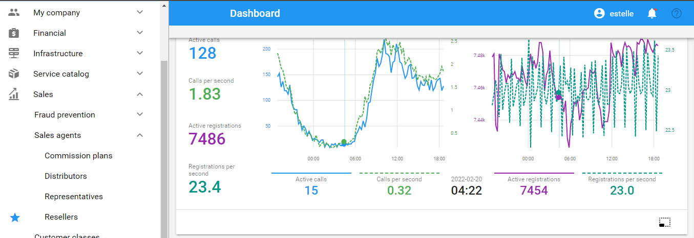
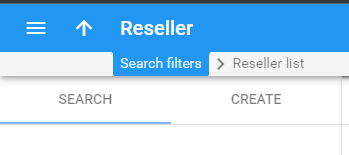
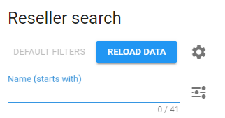
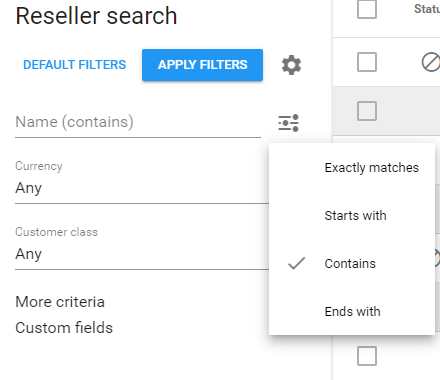
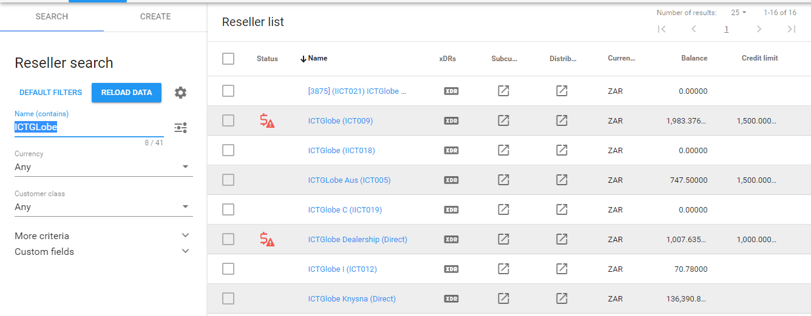

Resellers
How to search for a reseller on Porta
1. Left on the navigation menu, select Sales, then Sales Agents, and click Resellers.
NOTE: If you will be using the 'Reseller' search function frequently, you can save it to your favourites for faster navigation.

Once navigated to the reseller list, the task will be on 'Search' by default.
2. Upon searching the reseller, the Porta search method by default is set to 'starts with', which does not always have successful search results.

NOTE: When searching it is recommended to always select the 'Contains' option, from the search filters provided.

3. When the 'Contains' option was selected you can either search using the reseller name, or the reseller account number.
When you search using the reseller name, a list of all the resellers with a similar name will come up.
When you search using the account number, ideally only the reseller with that account number should come up.

If you are already logged in on Porta, you can also search for resellers from here .